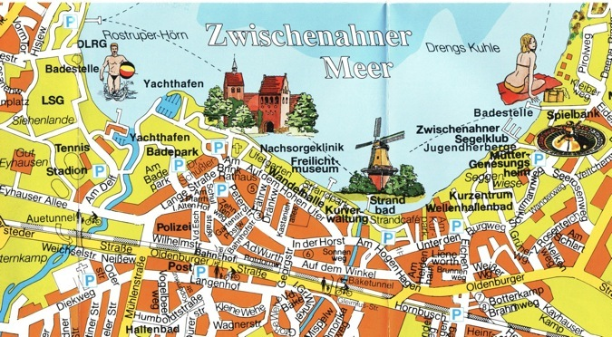
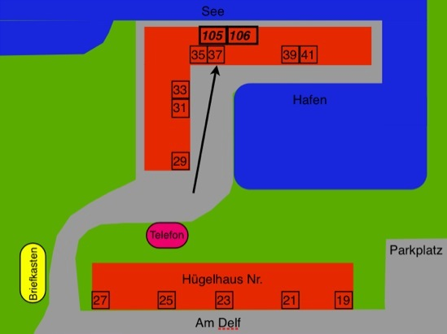

Ferienwohnungen „Am Meer“

mit der Bahn zum Bahnhof „Bad Zwischenahn“
-
dann mit dem Taxi zur Straße „Am Delf 37“
-
oder zu Fuß vorm Bahnhof links in die Wilhelmstraße bis zum Kaufhaus Ceka, dort rechts in die Mühlenstraße bis zu den Gaststätten „Sofra“ und „Pfeffermühle“, dort links in die Lange Straße; nach Querung der Aue rechts in den Fußweg, oder an der Einmündung rechts in die Straße „Am Delf“. Dort erreichen Sie nach ca. 600m das Haus.
mit dem eigenen Pkw
-
aus Bremen/Osnabrück:
-
am AD Oldenburg-West (Ausfahrt 11) auf die A28 Richtung Emden/Leer; dann die Ausfahrt 9 „Neuenkruge“ abfahren; dort rechts Richtung Bad Zwischenahn.
-
In Bad Zwischenahn der Hauptverkehrsstraße folgen, den Bahnhof rechts liegen lassen und an der Ampel rechts in die Mühlenstraße einbiegen. Danach die erste Straße links (Lange Straße) und dann die erste Straße rechts (Am Delf). Dort erreichen Sie nach ca. 600m das Haus.
-
aus Emden/Leer:
-
die A28 Richtung Oldenburg; dann die Ausfahrt 7 „Zwischenahner Meer“ abfahren; dort der Straße ca. 6km folgen bis zum Stoppschild.
-
Dort links abbiegen Richtung Bad Zwischenahn. An der 2. Ampel links in die „Eyhauser Allee“ und dann die 1. Straße links (Am Delf). Dort erreichen Sie nach ca. 600m das Haus.

copyright bei Kurverwaltung Bad Zwischenahn
Fewo „Am Meer“
